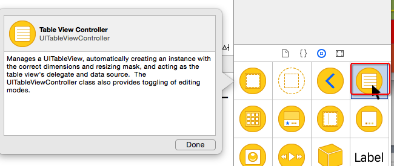

- Introduction
- 1. UI部分
- 2. OC 语法
- 3. IOS 编程
- 4. 百思不得姐专题
- Published using GitBook
frame和bounds的重新认识
- frame
- 以
父控件内容的左上角为坐标原点, 计算出的控件自己矩形框的位置和尺寸
- 以
- bounds
- 以
控件自己内容的左上角为坐标原点, 计算出的控件自己矩形框的位置和尺寸
- 以
- 概括
- frame.size == bounds.size
- scrollView.bounds.origin == scrollView.contentOffset
bounds和frame的区别

矩形框和内容的理解
- 矩形框
- 控件自己的显示位置和尺寸
- 内容
- 控件内部的东西,比如它的子控件
在使用UITableViewController过程中,可能会出现的错误
@interface TestTableViewController : UITableViewController
@end
'-[UITableViewController loadView] instantiated view controller with identifier "UIViewController-BYZ-38-t0r" from storyboard "Main", but didn't get a UITableView.'
- 造成这个错误的原因
- 错误地将一个UIViewController当做UITableViewController来用
- 错误做法

- 正确做法


contentInset的调整
- 默认情况下, 如果一个控制器A处在导航控制器管理中, 并且控制器A的第一个子控件是UIScrollView, 那么就会自动调整这个UIScrollView的contentInset
- UIEdgeInsetsMake(64, 0, 0, 0) // 有导航栏
- UIEdgeInsetsMake(20, 0, 0, 0) // 没有导航栏
- 默认情况下, 如果一个控制器A处在导航控制器管理中, 并且导航控制器又处在UITabBarController管理中, 并且控制器A的第一个子控件是UIScrollView, 那么就会自动调整这个UIScrollView的contentInset
- UIEdgeInsetsMake(64, 0, 49, 0)
- 如何禁止上述的默认问题?
控制器A.automaticallyAdjustsScrollViewInsets = NO;
文字内容换行
- 如何让storyboard\xib中的文字内容换行
- 快捷键: option + 回车键
- 在storyboard\xib输入\n是无法实现换行的
- 在代码中输入\n是可以实现换行的
self.label.text = @"534534534\n5345345\n5345";
修改状态栏样式
- 使用UIApplication来管理
[[UIApplication sharedApplication] setStatusBarStyle:UIStatusBarStyleLightContent];
在Info.plist中做了图中的配置,可能会出现以下警告信息

- 使用UIViewController来管理
@implementation XMGLoginRegisterViewController
- (UIStatusBarStyle)preferredStatusBarStyle
{
return UIStatusBarStyleLightContent;
}
@end
在xib\storyboard中使用KVC